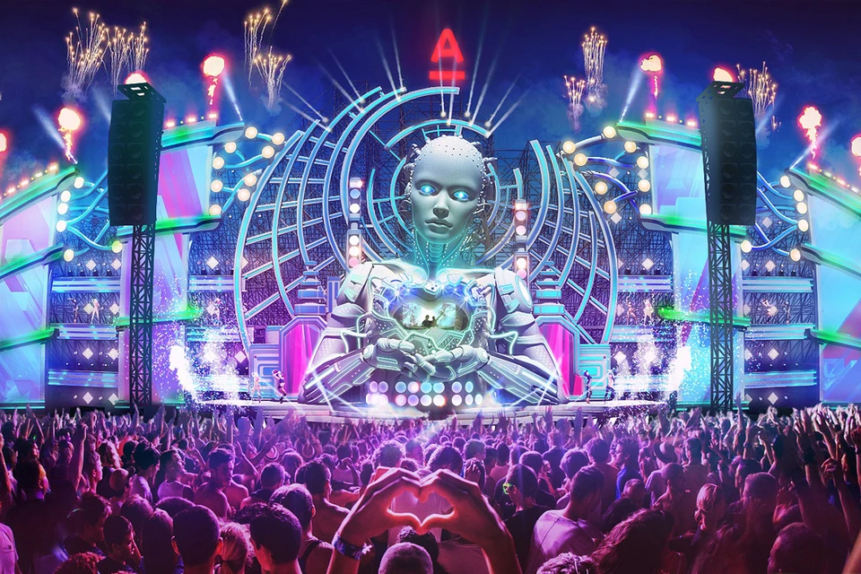

История электронной музыки

В настоящее время, электронная музыка Это один из самых слушаемых и признанных во всем мире, но его происхождение восходит к прошлому столетию.
Несмотря на то, что в начале она была связана исключительно с музыкальной формой западного образования, с конца 1960-х музыкальные технологии стали более доступными с точки зрения цен, в результате чего музыка, созданная с помощью электронных средств, стала более популярной.
Десятилетие двадцатых годов принесло огромное количество примитивных электронных инструментов и дало начало экспериментам со звуком.
В 50-х годах созданные в США звуки использовались в Соединенных Штатах для различных композиций.
Штокхаузен, составленный в 1954 году Электронная сюита II, первая электронная часть, которая будет издана как саундтрек.
В том же десятилетии появился CSIRAC, первый в мире компьютер для воспроизведения музыки; Первый синтезатор, RCA Mark II Sound Synthesizer, также появился, но его было очень сложно использовать, поскольку он требовал обширного программирования и не мог воспроизводиться в реальном времени.
60-е годы уже видели прогресс в плане синтезаторов, инструментов, которые стали более доступными.
Для 70-х появляются Крафтвек y Жан-Мишель Жарр, ключевые элементы в развитии и успехе электронной музыки.
К 90-м годам приходит транс и хардстайл. В этом десятилетии спектакли начались с помощью интерактивных компьютеров.
В начале текущего столетия производство музыки стало возможным с использованием ноутбуков и живого кодирования.
Наш топ интересных исполнителей:
 World of Music
World of Music